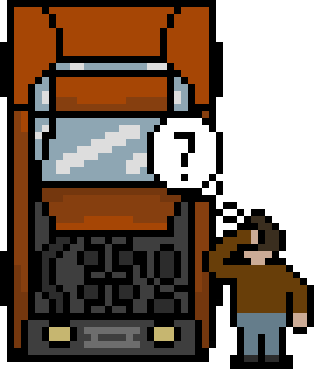
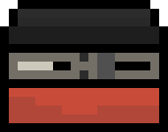
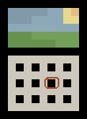
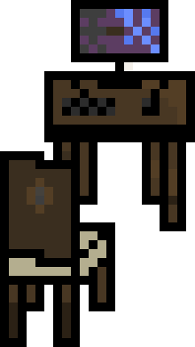
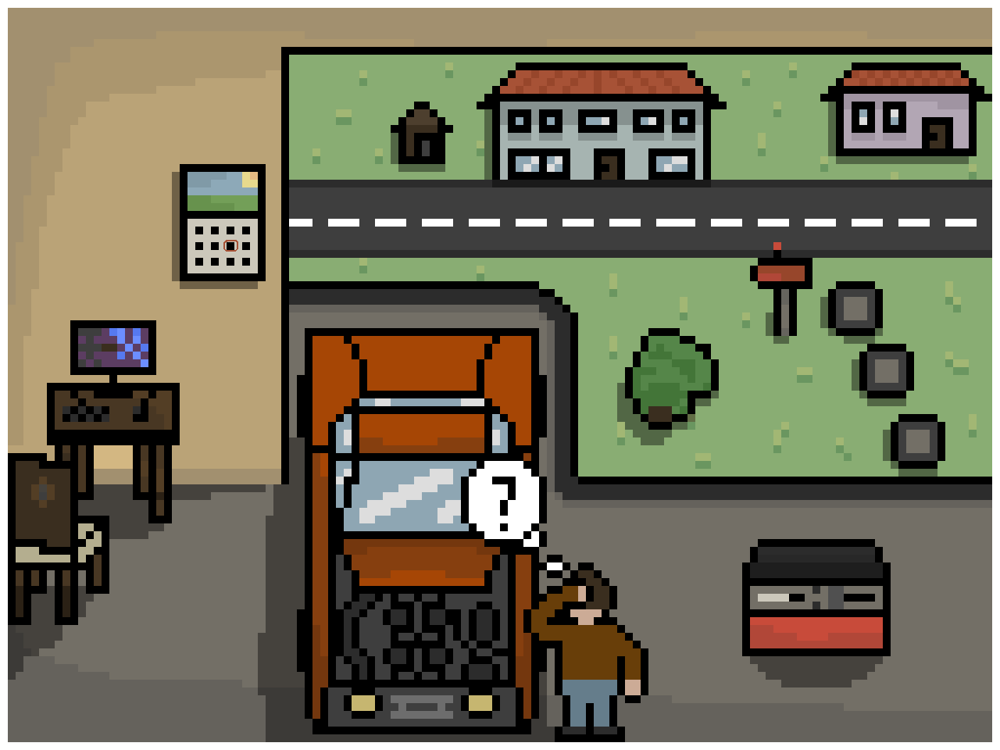

While reading the post you'll "unlock" parts of a Pixel Art image. Once you've read the entire post, you'll be rewarded with the full Pixel Art!
Unity is a game engine that was first released in 2005. It supports any gaming platform you can think of and is a very popular game engine. Some of the games you might know and have been made in Unity are Cuphead, Pokemon Go, Escape from Tarkov, Cities: Skylines and many more. Unity is also a very popular game engine among the indie game development community, thus having a huge amount of tutorials and developer making game in Unity and sharing their progress, giving you an opportunity to see how game developers achieve certain mechanics effects or anything else.
I'm not diving deep into the technical part of it, as that's not the points of the post, so a game engine is a tool/software that is made to create games. Most game engines include certain libraries, support programs, a suite of tools. rendering engine, animation and sound and much more.
But that's all technical stuff which is hard to understand if you're just starting, but don't worry, you'll learn about it as you go and as you'll need to research a certain topic more in-depth in order to create a feature in your projects. The most technical thing you have to know for now, is that a game engine doesn't look or work like a car engine. What is useful to know is that it's a very powerful software and there are many different game engines. Some of the most popular are Unity, Unreal Engine and Godot. Each one of them it's advantages and disadvantages. Make sure you do your reasearch on game engines before deciding on the one you want to use. Alternatively you can try them all and see which suits you best. This is a more viable options for you if you have some game development experience. However if you're new to game development and/or programming this might be a bit time-consuming.
The way I've gone about it is doing research before diving into a game engine. I've decided to go with Unity and the two primary reasons were the flexibility of the software and the amount of study material available on the internet.
In terms of hardware you don't have to worry about it too much. To run Unity you don't need an expensive PC, it can even be an older one. Hardware requirements increase if you want to work on 3D games, as you have to render the models and if you plan on doing the models yourself, you should check the requirements of the 3D modeling software. I only have experience in Blender and I was able to work with it on a pretty old laptop just fine. As long as you don't aim for that AAA graphics you shouldn't worry. Either way, you'll once again have to do your research. I'm happy to give you advice if you contact me, I just don't think it makes sense to put a bunch of options in this blog as I will for sure miss some and they'll be outdated in about a year.
As for software there is one piece you'll need and that is a text/code editor. There are a lot of great options available and if you've already dipped your toes into programming you probably already have a favorite one. If not, an editor called Visual Studio is very popular among programmers and Unity developers as it offers easy integration with Unity and gives you good auto-fills as well as it can recognize Unity specific code errors. Besides that I can recommend Sublime Text, it also offers some Unity integration, but I mainly like it for its lightweight and how it looks. I use both of them, though I'm leaning more into Visual Studio when it comes to Unity. Either way, all options are equally viable.
That's all you need to start, after that you'll have to think about which software do you wish to use for creating/editing either audio effects or music. You'll also have to think about a graphics editing tool, if you're going for a 2D game, you can decide for a pixel art style, drawing style or any of the other styles or make a combination of them that you like the most, it really comes down to what you want. Once you figure that out, you'll have to find an appropriate tool for that as well. Then there is a bunch of supplemental software options that you can have. But don't worry, I'll touch on that when we get to it (including audio and graphics), for now a code editor is enough. Let's just mark it down on the calendar so I don't forget.
Well there are a lot of different opinions on which game engine should you use and if you should use a game engine at all. With that there are a lot of valid arguments for all options so the best I can do is to take you through my thought process.
As I was sitting behind my PC, reading on game engines, the first conclusion I came to was that I will definitely use a game engine and not try to make my own. Why? Well I had no idea how to make a game, so that's a good reason as I didn't even know what a game engine should offer. The second reason is that I wanted to finish at least one game in my life time. After that I started doing a comparison between game engines. While Godot looked really promising since I knew I wanted to make a pixel art game, but I cam to a conclusion that both Unity and Unreal are better at 3D games and I didn't want to learn Godot only to later realise that I would like to make a 3D game as well and know that it would be better do make it outside Godot. That would mean I would have to invest more time into learning a completely new game engine. The difference between the functionalities of Unity and Unreal seemed rather small. I decided to go with Unity because I found more learning material and the interface seemed simpler.
I'm happy with my choice as I have learned a lot and I feel pretty confident in Unity right now, I feel like I know the majority of things I need and if there's something I don't know I easily recognize how and where to search for information. There are a lot of great features and there are a lot of features I haven't even explored yet. Based on my experience, I recommend Unity to anyone who is just starting with game development and also you can follow my blog/tutorials with ease, so that's a plus!
In the next post we'll start-up Unity and I'll teach you how to start a project and we might even code our first functionality!
If you enjoyed and maybe learned something reading this, follow me on Twitter, so you'll be notified when the next post is uploaded.
